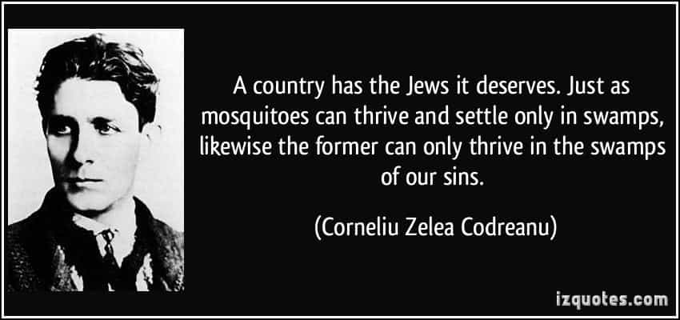

This account syndicates news from other media outlets.


When telecommunications manager Mikhail Tanaev emigrated to Germany in 1998 from his native Russia as a teen, his Jewish faith didn’t matter to classmates or neighbors.
That’s because Germany has taken extraordinary steps since the end of World War II to atone for the Holocaust and prevent anti-Semitism from taking hold again. The country has paid reparations to Jewish victims of Nazi persecution, erected dozens of memorials to those murdered and turned anti-Semitic speech into a crime.
Yet Chancellor Angela Merkel’s decision in 2015 to open the nation’s arms to 1 million mostly Muslim refugees has created a double threat for Germany’s roughly 120,000 Jews: rising anti-Semitism from the newcomers and a resurgent right-wing nationalist movement spawned by the arrival of so many immigrants.
The anti-Semitic sentiment has become more pubic and virulent, said Tanaev, 32. “When I arrived in Germany … I never saw such displays.”

Last week, thousands of protesters in Berlin burned Israeli flags to protest President Trump’s decision on Dec. 7 to recognize Jerusalem as Israel’s capital. The flag-burning prompted a national outcry.
“I never thought that could happen in the middle of Berlin. That’s something you see in other parts of the world. It’s really disturbing,” Tanaev said. “It feels like we’re being threatened because you never know how people will react further when something like this occurs.”
Other instances of anti-Semitism in Germany have become more common and brazen recently. Last month, thieves in Berlin made off with more than a dozen cobblestone-sized plaques embedded in sidewalks memorializing victims of the Holocaust. And the German military found Nazi memorabilia in soldiers’ barracks over the summer.
In 2016, Germany recorded 1,468 anti-Semitic incidents, an increase from previous years that has put Germany’s Jewish community on edge, According to a recent survey by the Bielefeld University in western Germany, 62% of Jewish respondents said they experience anti-Semitism in their everyday lives, while 28% said they were victims of verbal attacks or harassment in the past year.
The survey points to increased anti-Semitism by Muslim newcomers and a strengthened right-wing nativist movement, said Andreas Zick, who led the study.
“Germans are the only people in the world who plant a monument of shame in the heart of the capital,” senior AfD member Björn Höcke said this year about the Memorial to the Murdered Jews of Europe in Berlin.
Other party members want Nazi soldiers remembered as patriots.
Zick also noted anti-Semitic remarks posted on social media by right-wing groups. The comments fuel misconceptions among new immigrants that Germany tolerates such behavior, despite strict laws requiring social media giants such as Facebook to delete posts categorized as hate speech, he said.

“There’s a lot of evidence from our studies that the Internet and young Muslim men in public are threatening (Jews),” Zick said. “Refugees coming in don’t perceive that there’s a strong norm against anti-Semitism.”
Such sentiments prompted a Jewish community center in Berlin to launch an initiative to combat anti-Semitism.
“Here, we put in concrete terms that ‘the Jew’ is actually a normal person — that he looks like you and is someone you can have a normal conversation with,” said Rabbi Daniel Fabian of the Kahal Adass Jisroel Jewish community center and synagogue.
Members of the community center have been spit on and harassed in predominately Muslim neighborhoods since 2014, Fabian said. And his synagogue recently received a bomb threat from right-wing radicals. The compound housing the synagogue and community center are now under 24-hour police surveillance.
Jewish leaders are pushing for changes in the education system to head off anti-Semitism, including history lessons with visits to concentration camps. Bavaria is the only German state that now requires such visits.
“We are looking for modern means to convey what has happened and to keep the memory alive,” said Josef Schuster, president of Germany’s Central Council of Jews.
Tanaev said it also is important to draw parallels between the history of Jewish immigration and the current influx of newcomers. “That’s the history of our people, and it’s important to show others that fact,” he said.
Fabian, whose grandmother was in the Auschwitz concentration camp during World War II, called for support from Muslim groups as well as the government to fight anti-Semitism.
“We can’t be the only ones who are constantly reminding everyone else to look at what’s happening right under your noses,” he said.
Don’t Miss: The Damaging Effects Of Jewish Intellectualism And Activism On Western Culture